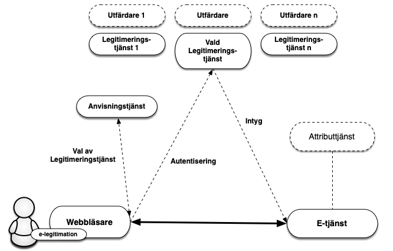
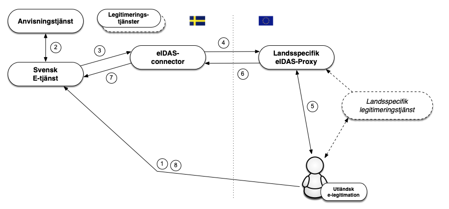

En introduktion till Sweden Connect Tekniskt ramverk
2022-10-05
Diarienummer: 2019-267
Copyright © Myndigheten för digital förvaltning (DIGG), 2015-2022.
Innehållsförteckning
-
1.1. Översikt
1.2. Tillitsramverk och säkerhetsnivåer
1.3. Tjänst för insamling, administration och publicering av metadata
1.4. Anvisningstjänst
1.5. Integration hos förlitande part
1.6. Underskrift
1.7. Tekniskt ramverk och eIDAS
1.7.1. Autentiseringar med utländska e-legitimationer
1.7.2. Underskrifter med utländska e-legitimationer
1.7.3. Hantering av identiteter
-
2.1. SAML-profiler
2.1.1. Deployment Profile for the Swedish eID Framework
2.1.2. Swedish eID Framework - Registry for identifiers
2.1.3. Attribute Specification for the Swedish eID Framework
2.1.4. Entity Categories for the Swedish eID Framework
2.1.5. eIDAS Constructed Attributes Specification for the Swedish eID Framework
2.1.6. Implementation Profile for BankID Identity Providers within the Swedish eID Framework
2.1.7. Principal Selection in SAML Authentication Requests
2.2. Specifikationer för Underskrift
2.2.1. Implementation Profile for using OASIS DSS in Central Signing Services
2.2.2. DSS Extension for Federated Central Signing Services
2.2.3. Certificate Profile for Certificates Issued by Central Signing Services
-
3.1. DIGG
3.2. Övriga referenser
1. Introduktion
1.1. Översikt
Sweden Connect Tekniskt Ramverk är anpassat för identitetsfederationer som baseras på SAML 2.0.
Förlitande parter erhåller identitetsintyg i ett standardiserat format från en legitimeringstjänst1.
E-tjänster som kräver underskrift behöver inte anpassas efter olika användares e-legitimationer för att skapa elektroniska underskrifter. Istället överlåter e-tjänsten detta till en underskriftstjänst där användare med stöd av legitimering via en legitimeringstjänst ges möjlighet att underteckna elektroniska handlingar.
Inom federationen intar e-tjänster och motsvarande förlitande parter rollen som Service Provider (SP) medan legitimeringstjänster som utfärdar identitetsintyg intar rollen som Identity Provider (IdP) och därmed den som autentiserar användaren, oavsett mot vilken e-tjänst som användaren legitimerar sig.
För de fall där e-tjänsten behöver mer information om användaren t ex. uppgift om juridisk behörighet, kan en fråga ställas till en attributtjänst, Attribute Authority (AA), inom federationen, om sådan relevant attributtjänst finns. Genom en attributsförfrågan kan e-tjänsten erhålla nödvändig kompletterande information för att kunna auktorisera användaren och ge tillgång till e-tjänsten eller motsvarande.
Då såväl personidentitetsuppgifter som andra attribut kopplat till användare tillhandahålls genom identitetsintyg och attributsintyg, kan alla typer av e-legitimationer som förlitande part har avtal om och som ingår i federationen användas för legitimering mot en e-tjänst som kräver såväl personnummer som ytterligare information, även om e-legitimationen inte innehåller några specifika personuppgifter (t.ex. koddosor för generering av engångslösenord).

Figur 1: Illustration av kommunikationen mellan de olika tjänsterna inom en identitetsfederation.
[1]: Legitimeringstjänst benämns i annan dokumentation från DIGG också som identitetstjänst och intygstjänst. I detta dokument används dock uteslutande benämningen legitimeringstjänst.
1.2. Tillitsramverk och säkerhetsnivåer
Grunden för vilken säkerhetsnivå som tillämpas när en användare legitimerar sig är den tillitsnivå avseende e-legitimationen som e-tjänsten kräver. För att dessa säkerhetsnivåer ska kunna vara jämförbara inom ramen för federationen definieras fyra tillitsnivåer (1 – 4) i Tillitsramverket för Svensk e-legitimation [EidTillit] och tre tillitsnivåer (låg, väsentlig, hög) i EU-förordningen eIDAS. Alla som utfärdar identitetsintyg måste visa att hela den process som ligger till grund för utfärdandet av identitetsintyg uppfyller kraven i den efterfrågade tillitsnivån, detta innefattar bl.a.
Krav på skapandet av identitetsintyget.
Krav på den elektroniska legitimeringen (autentiseringen).
Krav på utfärdandeprocessen.
Krav på själva e-legitimationen och dess användning.
Krav på utfärdaren av e-legitimationen.
Krav på fastställande av den e-legitimationssökandens identitet.
1.3. Tjänst för insamling, administration och publicering av metadata
En SAML-federation tillhandahåller information om federationens deltagare genom SAML metadata. Som deltagare i en federation räknas såväl aktörer som levererar legitimerings- och attributtjänster i federationen som förlitande parter, d.v.s. aktörer som konsumerar dessa tjänster, t ex. e-tjänster.
Genom federationens metadata kan deltagare inhämta information om andra deltagares tjänster, inklusive de uppgifter som krävs för ett säkert informationsutbyte mellan deltagarna. Metadata måste hållas uppdaterat av respektive part och överensstämma med avtalade förhållanden.
Det viktigaste syftet med metadata är att tillhandahålla de nycklar/certifikat som krävs för säker kommunikation och informationsutväxling mellan tjänster. Utöver nycklar innehåller metadata även annan information som är viktig för samverkan mellan tjänster t ex. adresser till funktioner som krävs, information om tillitsnivåer, tjänstekategorier, användargränssnittsinformation mm.
En identitetsfederation definieras av ett register i XML-format som är signerat med federationsoperatörens certifikat. Filen innehåller information om identitetsfederationens medlemmar inklusive deras certifikat. Eftersom filen med metadata är signerad räcker det med att jämföra ett certifikat med dess motsvarighet i metadata. En infrastruktur baserad på ett centralt federationsregister förutsätter att registret uppdateras kontinuerligt samt att federationsmedlemmarna alltid använder den senaste versionen av filen.
1.4. Anvisningstjänst
I en identitetsfederation är det möjligt att erbjuda och konsumera en gemensam anvisningstjänst (Discovery Service), som listar vilka legitimeringstjänster som är möjliga för användaren att välja mellan. Syftet med en sådan anvisningstjänst är att avlasta de enskilda e-tjänsterna som ingår i identitetsfederationen från att själva implementera stöd för hur användare väljer legitimeringstjänst (eller inloggningsmetod).
Genom att anvisningstjänsten finns tillgänglig inom identitetsfederationen kan e-tjänster styra sina användare dit för val av legitimeringstjänst. Anvisningstjänsten interagerar med användaren som gör sitt val och användaren, tillsammans med dennes val, styrs tillbaka till e-tjänsten som nu vet till vilken legitimeringstjänst användaren ska skickas för legitimering.
För närvarande finns ingen gemensam anvisningstjänst för Sweden Connect-federationen.
1.5. Integration hos förlitande part
Förlitandeparter, t.ex. e-tjänster, integrerar mot legitimeringstjänster genom standardiserade meddelanden och konsumerar identitetsintyg vilka också har standardiserade format.
Sweden Connect tekniskt ramverk är influerad av interoperabilitetsprofilen ”SAML V2.0 Deployment Profile for Federation Interoperability” [SAML2Int]. Profilen stöds av ett flertal kommersiella produkter och Open Source-lösningar, vilket underlättar integrationsarbetet hos e-tjänster.
Många e-tjänster använder fristående autentiseringslösningar vilket innebär att en anpassning av integrationen för att följa tekniskt ramverk får en begränsad påverkan på e-tjänsten som sådan.
1.6. Underskrift
Vid underskrift blir det med Sweden Connect tekniskt ramverk möjligt att använda olika typer av e-legitimationer, även sådana som inte är certifikatbaserade, utan att speciella anpassningar i e-tjänsten behövs. Anledningen är att det är det elektroniskt utställda identitetsintyget (som används för identifiering av användare vid underskrift) har samma format oavsett vilken typ av e-legitimation som användaren använder.
En underskriftstjänst har som syfte att möjliggöra underskrift inom identitetsfederationer som följer tekniskt ramverk med stöd av alla typer av e-legitimationer som erbjuder tillräcklig grad av säkerhet.
Genom att upphandla1 och införa en underskriftstjänst kan en förlitande part som ingår i federationen låta en användare skriva under en elektronisk handling med stöd av underskriftstjänsten. Användarens elektroniska signatur och tillhörande signeringscertifikat skapas av underskriftstjänsten efter det att användaren accepterat att skriva under genom att legitimera sig mot underskriftstjänsten2.
[1]: Det är också möjligt att själv implementera en underskriftstjänst baserat på specifikationerna i tekniskt ramverk, eller på annat sätt införskaffa en underskriftstjänst.
[2]: Viktigt att påpeka är att det är av största vikt att användaren upplever det som att denne skriver under en handling. Därför ska ett underskriftsflöde användas för de e-legitimationer som stödjer detta i samband med "legitimering för underskrift".
1.7. Tekniskt ramverk och eIDAS
EU-förordningen (910/2014) om elektronisk identifiering och betrodda tjänster, eIDAS, ställer krav på svenska offentliga organ att erkänna de e-legitimationer som andra eIDAS-länder har anmält. Detta innebär att en offentlig svensk e-tjänst baserat på vissa regler skall kunna acceptera en inloggning som utförs med en e-legitimation utställd i ett annat land.
1.7.1. Autentiseringar med utländska e-legitimationer
De tekniska specifikationerna för eIDAS bygger, såsom tekniskt ramverk, på SAML-standarder, och även om likheterna är många finns även skillnader i dessa specifikationer. En svensk e-tjänst ska dock inte förhålla sig direkt till eIDAS tekniska specifikationer. Nedanstående bild illustrerar hur den svenska eIDAS-noden (eIDAS-connector) agerar som en brygga mellan andra länder och den svenska federationen då en person autentiseras med en utländsk e-legitimation mot en svensk e-tjänst. Den svenska eIDAS-noden följer tekniskt ramverk.

Flödet är enligt följande:
En användare med en utländsk e-legitimation begär åtkomst till en svensk e-tjänst (d.v.s., loggar in).
E-tjänsten låter användaren välja inloggningssätt med hjälp av en anvisningstjänst. Ett val ”Foreign eID” visas upp, vilket användaren i eIDAS-fallet väljer.
E-tjänsten skapar en legitimeringsbegäran enligt detta tekniska ramverk och styr användaren till den svenska eIDAS-noden (connector) som DIGG ansvarar för. eIDAS-noden uppträder som en legitimeringstjänst (Identity Provider) i federationen in mot svenska förlitande parter vilket innebär att kommunikation med denna tjänst utförs på samma sätt som mot övriga legitimeringstjänster inom federationer som följer tekniskt ramverk.
Den mottagna begäran behandlas och eIDAS-noden visar upp en valsida där användaren väljer ”sitt land”1. Den svenska eIDAS-noden omvandlar nu den mottagna legitimeringsbegäran till en legitimeringsbegäran enligt eIDAS och användaren styrs till det valda landets ”eIDAS Proxy-tjänst”.
Då legitimeringsbegäran mottas av den eIDAS-Proxy-tjänst för valt land tar detta lands teknik för autentisering över. Inte alla länder inom eIDAS använder SAML för autentisering, men om så var fallet i vårt exempel skulle användaren styras vidare till en legitimeringstjänst (Identity Provider), och innan dess kanske även en anvisningstjänst för val av legitimeringstjänst.
Då en autentisering utförts skapas ett intyg (Assertion) enligt eIDAS specifikationer. Detta intyg innehåller bl.a. eIDAS-specifika attribut som identifierar användaren. Detta intyg styrs nu vidare till den svenska eIDAS-noden.
Noden tar emot intyget och validerar dess korrekthet. Detta intyg transformeras från eIDAS-format till ett intyg utformat enligt tekniskt ramverk och postas till e-tjänsten.
Förlitande part kompletterar eventuellt med ytterligare information och avgör om användaren ska ges till åtkomst till tjänsten.
Svenska e-tjänster behöver således endast stödja tekniskt ramverk för att kunna hantera en autentisering utförd med en europeisk e-legitimation. Dock måste e-tjänsten kunna hantera den identitet som presenteras, vilket inte nödvändigtvis är ett personnummer. Det kan alltså hända att en e-tjänst autentiserar en användare via eIDAS-ramverket, men att användarens presenterade identitet inte går att använda hos e-tjänsten. Mer om detta i kapitlet 1.7.3 nedan.
[1]: Egentligen väljer användaren till vilken ”eIDAS Proxy-tjänst” som begäran ska skickas vidare till. Detta är beroende landstillhörigheten för användarens e-legitimationsutfärdare.
1.7.2. Underskrifter med utländska e-legitimationer
Som redan beskrivits tillämpas en modell för elektronisk underskrift inom ramen för detta tekniska ramverk som kallas federerad underskrift. En serverbaserad underskriftstjänst knyts till e-tjänsten som i sin tur begär underskrift. När en användare skriver under ett dokument skickar e-tjänsten en underskriftsbegäran till underskriftstjänsten. Underskriftstjänsten begär därefter att användaren legitimerar sig. I samband med legitimeringen godkänner användaren underskriften. Underskriftstjänsten skickar tillbaka uppgifter till e-tjänsten och därefter lagras underskriftsuppgifterna kopplade till den handling som har skrivits under.
Detta förfarande möjliggör att skriva under även med utländsk e-legitimation då underskriftstjänsten kan välja att legitimera användaren med utländsk e-legitimation i enlighet med förfarandet som beskrivs ovan i avsnitt 1.7.1.
Vid en underskrift ansvarar i det fallet den svenska eIDAS-noden för att användaren upplyses om att syftet med legitimeringen är att skriva under ett dokument, vem som begärt underskrift samt med eventuell information om vad som undertecknas. Först när användaren genom att legitimera sig (för underskrift) utfärdas ett identitetsintyg, som skickas till underskriftstjänsten och som i sin tur genererar underskriften.
1.7.3. Hantering av identiteter
Identitetsintyg från andra länder följer EU-gemensamma tekniska specifikationer framtagna inom ramen för eIDAS-regelverket. Här specificeras de attribut som varje land alltid måste skicka med för fysiska personer såväl som för organisationer (”Minimum Dataset”, MDS). Varje land måste skicka med en unik identifierare per e-legitimation som representerar endast en fysisk person. Från vissa länder kommer dessa identifierare vara unika och beständiga per person på motsvarande sätt som t.ex. svenska personnummer, men dessa identifierare kan ha vitt skilda sammansättningar och ha väldigt olika egenskaper. En egenskap som kan variera är hur persistent en sådan identifierare är, d.v.s., om en sådan identifierare är oförändrad under en persons livstid eller om den ändras om personen exempelvis flyttar till en annan region, byter namn eller bara byter e-legitimation. Från några länder (t.ex. Storbritannien) kommer identifieraren att vara olika beroende på vilken av landets e-legitimationer en användare för tillfället väljer att använda.
För att förenkla hanteringen av användare i svenska e-tjänster genererar den svenska eIDAS-noden ett standardiserat ID-attribut för användare som legitimerats med utländsk e-legitimation, ett s.k. provisional ID (förkortat PRID). Dessutom skapas ett tillhörande attribut som deklarerar vilken förväntad persistens, eller livslängd, detta ID-attribut har. PRID-attributet genereras utifrån de attributvärden som erhålls från den utländska legitimeringen enligt specificerade metoder för respektive land. Varje kombination av land och metod klassas med avseende på förväntad persistens, d.v.s., hur sannolikt det är att en identitet ändras över tiden för samma person. Detta gör det möjligt för svenska e-tjänster att anpassa kommunikationen med användaren och proaktivt tillhandahålla funktioner som underlättar för en användare vars identitet har ändrats, att återfå kontrollen över sin information i e-tjänsten.
I vissa fall kan en person som legitimeras med en utländsk e-legitimation även inneha ett svenskt personnummer. Det kan till exempel röra sig om en svensk medborgare som flyttat utomlands och skaffat utländsk e-legitimation eller en utländsk medborgare som är folkbokförd i Sverige och har tilldelats ett personnummer.
Det faktum att en person med utländsk e-legitimation innehar ett svenskt personnummer är normalt sett inte känt för den utländska legitimeringstjänsten och denna information ingår därför inte i identitetsintyg från landet där personen legitimeras. Den svenska noden har däremot möjlighet att fråga en attributtjänst i Sverige1 om det finns ett registrerat personnummer för den legitimerade personen och kan, om så är fallet, påföra sådan information i det identitetsintyg som skickas till e-tjänsten.
[1]: I skrivande stund finns ingen attributtjänst som utför koppling mellan eIDAS-identiteter och svenska personnummer.
1.7.4. Svenska e-legitimationer i utländska e-tjänster
Sverige har anmält svenska e-legitimationer på tillitsnivå väsentlig (substantial) och hög (high) enligt eIDAS.
En begäran om legitimering från en utländsk e-tjänst ställs till den svenska eIDAS-noden (proxy-tjänst) via en s.k. eIDAS-connector i e-tjänstens land. I den svenska eIDAS-noden väljer användaren med vilken svensk e-legitimation denne önskar autentisera sig, varpå en legitimeringsbegäran till den legitimeringstjänst (Identity Provider) som hanterar vald e-legitimation skickas. Denna begäran är utformad enligt tekniskt ramverk vilket innebär att en svensk legitimeringstjänst inte behöver förhålla sig till eIDAS tekniska specifikationer.
Användaren autentiseras hos den svenska legitimeringstjänsten och ett identitetsintyg ställs ut (enligt tekniskt ramverk). Detta intyg mottas av den svenska eIDAS Proxy-tjänsten och omvandlas till ett intyg enligt eIDAS specifikationer innan det skickas vidare till den utländska eIDAS-connectorn och därpå till den anropande e-tjänsten (Service Provider).
2. Tekniska specifikationer
Detta kapitel innehåller specifikationer och profiler för identitetsfederationer som följer Sweden Connect tekniskt ramverk, och vissa kringliggande tjänster. Där inget annat nämns är dessa dokument normativa för leverans av tjänster inom identitetsfederationer som implementerar tekniskt ramverk.
2.1. SAML-profiler
Identitetsfederationer som följer Sweden Connect tekniska ramverk är uppbyggda kring ”Deployment Profile for the Swedish eID Framework”, [EidProfile]. Denna profil är influerad av, men inte normativt beroende på, ”SAML V2.0 Deployment Profile for Federation Interoperability” [SAML2Int]. [EidProfile] innehåller också regler och riktlinjer specifika för Sweden Connect tekniskt ramverk.
2.1.1. Deployment Profile for the Swedish eID Framework
”Deployment Profile for the Swedish eID Framework”, [EidProfile], är huvuddokumentet för tekniskt ramverk och specificerar bland annat:
Hur SAML metadata ska byggas upp och tolkas.
Hur formatet av en legitimeringsbegäran ska se ut.
Hur en legitimeringsbegäran ska behandlas, och hur ett identitetsintyg ska konstrueras, verifieras och behandlas.
Krav på säkerhet.
Specifika SAML-krav för underskriftstjänster och "legitimering för underskrift".
2.1.2. Swedish eID Framework - Registry for identifiers
Implementering av en infrastruktur för Svensk e-legitimation kräver olika former av identifierare för att representera objekt i datastrukturer. Dokumentet ”Swedish eID Framework - Registry for identifiers”, [EidRegistry], definierar strukturen för identifierare som tilldelats inom ramen för tekniskt ramverk, samt ett register över definierade identifierare.
2.1.3. Attribute Specification for the Swedish eID Framework
Specifikationen ”Attribute Specification for the Swedish eID Framework”, [EidAttributes], deklarerar de SAML attributprofiler som används inom identitetsfederationer som följer tekniskt ramverk inklusive de som ansluter till eIDAS via den svenska eIDAS-noden.
2.1.4. Entity Categories for the Swedish eID Framework
Entitetskategorier (Entity Categories) används inom federationen för ett antal olika syften:
Service Entity Categories – Används i metadata för att representera e-tjänsters krav på tillitsnivåer och begärda attribut, samt legitimeringstjänsters uppfyllande av tillitsnivåer och leverans av attribut.
Service Property Categories – Används för att representera en viss egenskap hos en tjänst.
Service Type Entity Categories – Används för att representera olika tjänstetyper inom federationen.
Service Contract Entity Categories - Används av tjänster för att annonsera avtalsformer och liknande.
General Entity Categories - Entitetskategorier som inte faller inom ramen för någon av de ovanstående typerna.
Specifikationen ”Entity Categories for the Swedish eID Framework” [EidEntCat] specificerar de entitetskategorier som definieras av tekniskt ramverk och beskriver dess betydelse.
2.1.5. eIDAS Constructed Attributes Specification for the Swedish eID Framework
Specifikationen ”eIDAS Constructed Attributes Specification for the Swedish eID Framework”, [EidConstrAttributes], specificerar processer och regler för hur ID-attribut konstrueras baserat på attribut som tas emot vid legitimering mot eIDAS.
2.1.6. Implementation Profile for BankID Identity Providers within the Swedish eID Framework
Specifikationen "Implementation Profile for BankID Identity Providers within the Swedish eID Framework", [EidBankID], definierar regler för hur en legitimeringstjänst som implementerar stöd för BankID skall utformas.
Notera: Denna specifikation är inte normativ för uppfyllande av tekniskt ramverk. Den är endast relevant för legitimeringstjänster som implementerar stöd för BankID samt e-tjänster som använder dessa. Dock så skall legitimeringstjänster som implementerar stöd för BankID och vill ansluta till Sweden Connect-federationen uppfylla denna specifikation.
2.1.7. Principal Selection in SAML Authentication Requests
Specifikationen "Principal Selection in SAML Authentication Requests", [EidPrincipalSel], definierar en utökning till SAML som möjliggör för en förlitande part att informera en legitimeringstjänst vilken identitet den önskar ska legitimeras.
2.2. Specifikationer för Underskrift
Detta stycke innehåller referenser till de dokument vilka definierar underskriftstjänster inom federationer som följer Sweden Connect tekniskt ramverk.
2.2.1. Implementation Profile for using OASIS DSS in Central Signing Services
Implementationsprofilen ”Implementation Profile for Using OASIS DSS in Central Signing Services”, [EidDSSProfile], specificerar en profil för underskriftsbegäran och respons enligt OASIS standarden "Digital Signature Service Core Protocols, Elements, and Bindings", [DSS].
2.2.2. DSS Extension for Federated Central Signing Services
”DSS Extension for Federated Central Signing Services”, [EidDSSExt], är en påbyggnad av OASIS standarden ”Digital Signature Service Core Protocols, Elements, and Bindings”, [DSS], där definitioner som behövs för underskrift enligt tekniskt ramverk specificeras.
2.2.3. Certificate Profile for Certificates Issued by Central Signing Services
Certifikatprofilen ”Certificate profile for certificates issued by Central Signing services”, [EidCertProf], specificerar innehåll i signeringscertifikat. Denna profil tillämpar en ny certifikatextension till stöd för underskriftstjänster.
Denna profil refererar till "Authentication Context Certificate Extension", [AuthContext], vilken beskriver hur ”Authentication Context” representeras i X.509 certifikat.
2.2.4. Signature Activation Protocol for Federated Signing
Specifikationen "Signature Activation Protocol for Federated Signing", [EidSigAct], definierar ett "Signature Activation Protocol" (SAP) för implementation av "Sole Control Assurance Level 2" (SCAL2) enligt standarden "prEN 419241 - Trustworthy Systems Supporting Server Signing".
3. Referenslista
3.1. DIGG
eIDAS Constructed Attributes Specification for the Swedish eID Framework.
Implementation Profile for BankID Identity Providers within the Swedish eID Framework.
Implementation Profile for Using OASIS DSS in Central Signing Services.
Certificate profile for certificates issued by Central Signing services.
3.2. Övriga referenser
SAML V2.0 Deployment Profile for Federation Interoperability.